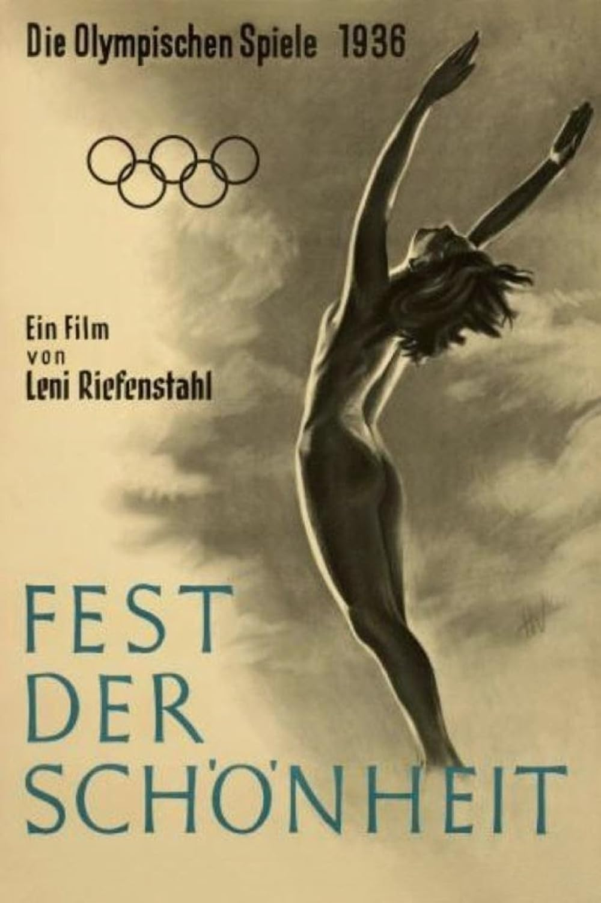
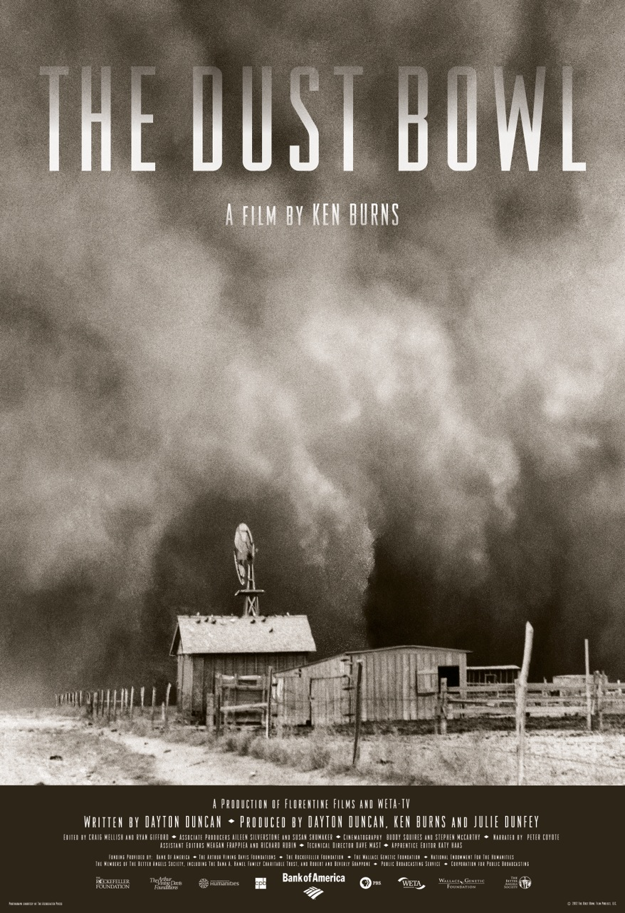
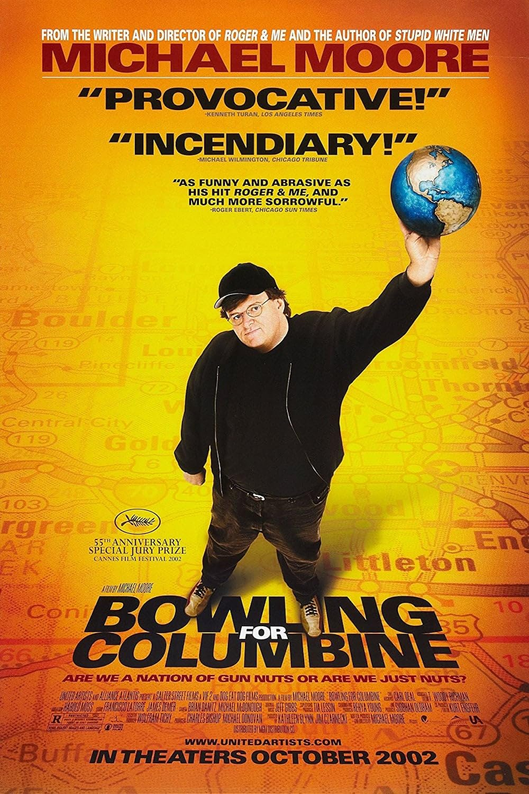
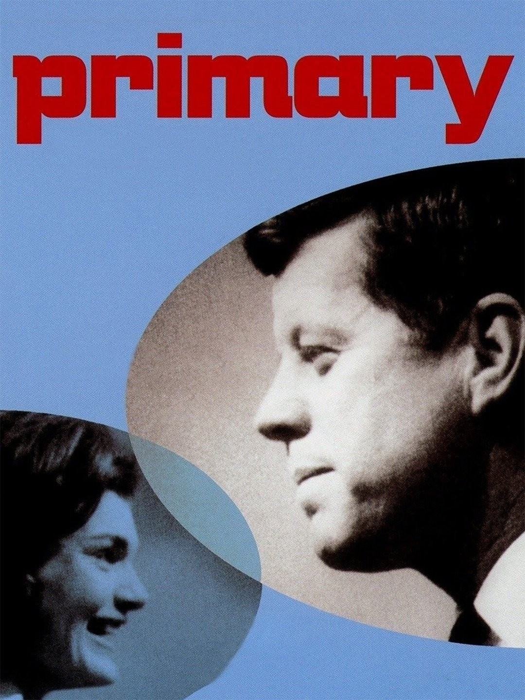
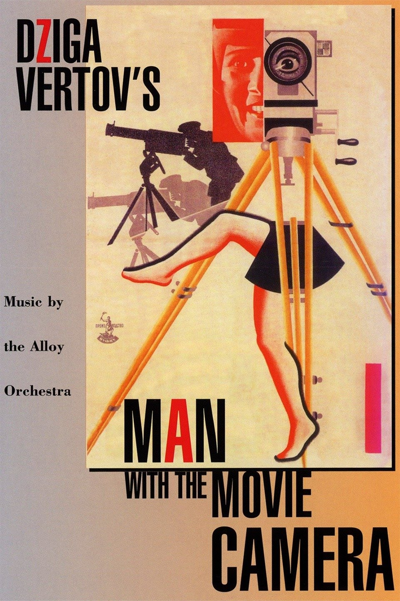
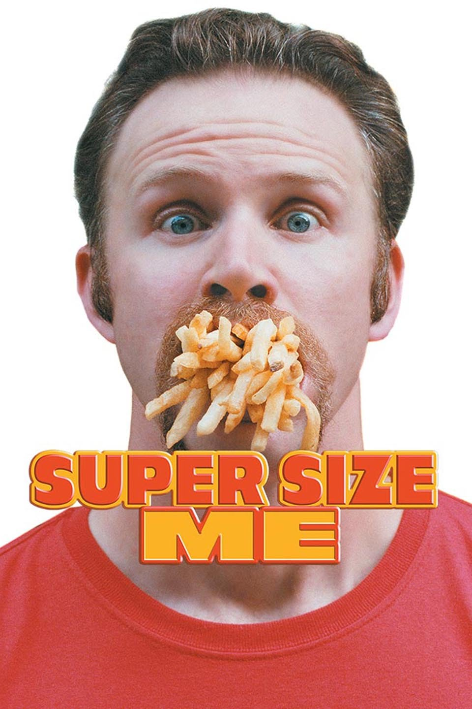

Poetic

A poetic documentary eschews linear continuity in favor of mood, tone, or the juxtaposition of
imagery. Since poetic documentaries often have little or no narrative content, the director of
photography is often asked to capture highly composed, visually striking images that can tell a
story without additional verbal context. Leni Riefenstahl’s Olympia (1938) is an example of a poetic
documentary that focuses on visuals and artistic style to help reveal an inner truth.
Expository

Expository documentaries set up a specific point of view or argument about a subject and often
feature “voice of God” style voice-over. For expository documentaries, the cinematographer is
responsible for collecting footage that supports and strengthens the spoken argument of the film,
including stock footage, archival footage, b-roll, or re-enactments of historical events. The Dust
Bowl (2012) is filmmaker Ken Burns’ historical account of the disastrous drought that occurred
during the Great Depression.
Participatory

Participatory documentaries are defined by the interaction between the documentary filmmakers and
their subject. Therefore, a cinematographer is equally responsible for capturing the interviewer as
he is the interviewee. Participatory documentaries, also known as interactive documentaries, often
present the filmmaker’s version of the truth as “the” truth, focusing on direct engagement with
subjects and capturing real emotional responses and interactions. Many of the interactions that are
captured support the filmmaker’s point of view or prove the film’s intent. Many of Michael Moore’s
documentaries, like Bowling for Columbine (2001), are participatory but also blend elements of
observational and performative modes.
Observational

A style of documentary embraced by the cinema verité movement, observational documentaries attempt to
discover the ultimate truth of their subject by acting as a fly-on-the-wall—in other words,
observing the subject’s real-life without interrupting. Cinematographers on observational
documentaries will often be asked to be as unobtrusive as possible in order to capture their
subjects in a raw, unguarded state. An example of this direct cinema type of documentary is Primary
(1960), a film chronicling the Wisconsin primary between John F. Kennedy and Hubert H. Humphrey.
Reflexive

Reflexive documentaries focus on the relationship between the filmmaker and the audience. Since the
subject matter is often the process of documentary filmmaking itself, a cinematographer will shoot
behind-the-scenes style footage of the entire film production process, including editing,
interviewing, and post-production. Dziga Vertov’s reflexive documentary Man With a Movie Camera
(1929) made history with its actor-less presentation of urban Soviet life.
Performative

Performative documentaries focus on the filmmaker’s involvement with their subject, using his or her
personal experience or relationship with the subject as a jumping-off point for exploring larger,
subjective truths about politics, history, or groups of people. A cinematographer is often asked to
capture the documentary production process, as well as intimate footage that illustrates the direct
and often personal relationship between filmmaker and subject. Supersize Me (2004) by filmmaker
Morgan Spurlock documents his experience eating only McDonald’s fast food for 30 days, chronicling
the body issues, health problems, and the ensuing doctor’s visits in an attempt to question the food
sold at the famous fast-food chain.